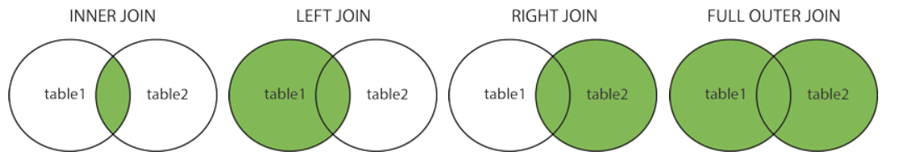

SELECT * FROM Customers;
SELECT CustomerName, City FROM Customers;
SELECT * FROM Customers WHERE Country='Germany' AND City='Berlin';
SELECT * FROM Customers ORDER BY Country;
INSERT INTO Customers (CustomerName, ContactName) VALUES ('Cardinal', 'Tom B. Erichsen');
UPDATE Customers SET ContactName = 'Alfred Schmidt', City= 'Frankfurt' WHERE CustomerID = 1;
DELETE FROM Customers WHERE CustomerName='Alfreds Futterkiste';
SELECT MIN(Price) AS SmallestPrice FROM Products;
SELECT COUNT(ProductID) FROM Products;
SELECT SUM(Quantity) FROM OrderDetails;
SELECT * FROM Customers WHERE Country IN ('Germany', 'France', 'UK');
The HAVING clause was added to SQL because the WHERE keyword cannot be used with aggregate functions.
SELECT COUNT(CustomerID), Country
FROM Customers
GROUP BY Country
HAVING COUNT(CustomerID) > 5;
SELECT Orders.OrderID, Customers.CustomerName
FROM Orders INNER JOIN Customers ON Orders.CustomerID=Customers.CustomerID;
SELECT COUNT(CustomerID), Country FROM Customers GROUP BY Country;
A stored procedure is a prepared SQL code that you can save, so the code can be reused over and over again.
CREATE PROCEDURE SelectAllCustomers AS SELECT * FROM Customers GO;
EXEC SelectAllCustomers;
A trigger is a stored procedure which automatically invokes whenever an event occurs(a row is inserted, or columns are updated)
create trigger stud_marks
before INSERT
on
Student
for each row
set Student.total = Student.subj1 + Student.subj2 + Student.subj3, Student.per = Student.total * 60 / 100;
SQL Server / Oracle / MS Access:
CREATE DATABASE testDB;
DROP DATABASE testDB;
CREATE TABLE Persons (
ID int NOT NULL PRIMARY KEY AUTO_INCREMENT,
LastName varchar(255)
);
ALTER TABLE Customers ADD Email varchar(255);
PostgreSQL
CREATE TABLE po_headers (
po_no INTEGER PRIMARY KEY,
vendor_no INTEGER,
description TEXT
);
SQL Constraints
NOT NULL - Ensures that a column cannot have a NULL value
UNIQUE - Ensures that all values in a column are different
PRIMARY KEY - A combination of a NOT NULL and UNIQUE. Uniquely identifies each row in a table
FOREIGN KEY - Prevents actions that would destroy links between tables.
FOREIGN KEY is a field(s) in one table, that refers to the PRIMARY KEY in another table.
CHECK - Ensures that the values in a column satisfies a specific condition
DEFAULT - Sets a default value for a column if no value is specified
CREATE INDEX - Used to create and retrieve data from the database very quickly
Date:
SELECT * FROM Orders WHERE OrderDate='2008-11-11'
PostgreSQL Data Types
boolean, alias: bool
integer, alias: int
character(n), alias: char [ (n) ]
character varying(n) or text, alias: varchar [ (n) ]
